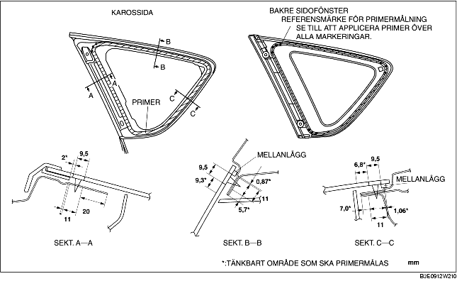

BAKRE SIDOFÖNSTER MONTERING
B3E091262580W02
-
Varni ng
-
• Användandet av en kniv med bara händer kan leda till skador. Använd alltid skyddshandskar när du använder en kniv.
-
Försiktigt
-
• Det kan vara svårt att montera rutan korrekt om tätningen har spruckit eller om glaset tryckts ut av lufttrycket när en dörr öppnats/stängts när alla rutor varit stängda. Lämna alla rutor öppna tills sidobakrutan monterats helt och hållet.
1. Skär bort den gamla tätningen med en rakbladskniv så att ca 1-2 mm {0,04-0,07 tum} tjockt tätningsmedel finns kvar längs ramens omkrets.
2. Om allt tätningsmedlet har försvunnit på något ställe, avfetta och sätt på lite primer och låt det torka i 30 minuter . Lägg sedan på ett cirka2 mm {0,08 tum} tjockt lager av nytt tätningsmedel.
3. Rengör och avfetta en ca 50 mm {2,0 tum} bred remsa runt om rutans kant och på karossens fastsättningsyta.
4. Montera mellanlägget längs rutans omkrets.
5. Använd bara glasprimer på sidoglasrutan, och karossprimer på karossen. Låt sedan torka under cirka 30 min.
-
Försiktigt
-
• Förhindra att primern släpper genom att hålla bindningsytan fri från smuts, fukt och fett. Ta inte på ytan med händerna.

6. Applicera tätningsmedel på glasets fastsättningsyta enligt bilden.
7. Sätt in positioneringsstiften och fästena i karossen och montera sidobakrutan.
8. Tryck in områdena där stiften sitter på sidobakrutan så att de greppar i karossen.
9. Montera följande delar:
-
(1) C-stolpens beklädnad (Se DEMONTERINGMONTERING AV KLÄDSEL PÅ C-STOLPE.)
-
(2) Koffertens övre sidobeklädnad (Se DEMONTERA/MONTERA KOFFERTUTRYMMETS ÖVRE SIDOBEKLÄDNAD.)
-
(3) Hjulhusbeklädnad (Se DEMONTERING/MONTERING AV HJULHUSETS BEKLÄDNAD.)
-
(4) Tröskelplåt bak (Se DEMONTERING/MONTERING AV BAKRE TRÖSKELPLÅT.)
-
(5) Baksäte (Se DEMONTERING/MONTERING AV BAKSÄTE.)
10. Låt tätningsmedlet härda ordentligt.
-
Härdningstid för tätningsmedlet: 24 timmar